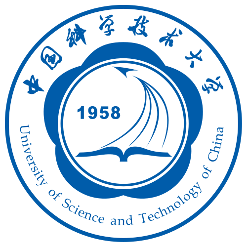
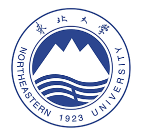

中国科学技术大学
2022 – 2027（预计）
信息与通信工程博士研究生（导师：熊志伟教授）
国家奖学金、深圳证券交易所奖学金



发现向 DiT 中插入 register tokens 可提取有效的潜在奖励，且在高噪声区域信号依然可靠；据此实现推理阶段的奖励梯度引导采样，零训练完成测试时偏好对齐。在 SD3-Medium 上显著超过 Flow-GRPO、DiffusionNFT 等训练类方法，且无 reward hacking、多样性无损。
提出面向长视频理解的证据驱动自纠错框架；动态视觉证据检索可打破幻觉的自我强化循环，并通过阶段解耦 GRPO 解决长轨迹的信用分配问题，在 VideoMME 和 LongVideoBench 上取得 SOTA 性能。
提出一种 HDR 视频生成范式，将内容生成与动态范围扩展解耦，通过共享早期生成轨迹实现严格时空对齐，利用 token 级缓存获得 3 倍加速，并在无需额外优化的情况下统一多种视频生成任务。
提出基于 Gain Map 分解扩散的文本到 HDR 图像生成模型；兼容 ControlNet 与主流 Stable Diffusion 插件，并支持 4K SDR 到 HDR 的生成式转换。
提出结合潜在采样的球面扩散模型，以显式控制视角、视场角和分辨率；统一透视图、全景图和鱼眼图像合成，并提升纹理细节与几何一致性。
旨在利用大规模文本-图像数据扩展全景图生成能力。方法通过扩展 OPSD，以透视图像条件增强全景生成器并构建 Self-teacher，将大规模文本-图像数据中的丰富语义与复杂视觉纹理迁移至全景生成。四步生成质量已超过五十步生成质量，Scaling 实验正在进行中。
提出基于彩色 Gain Map 的结构化逆色调映射框架，用于联合恢复动态范围与广色域；动态双边网格和可学习 3D LUT 分别反演局部与全局退化，在 4K 分辨率下达到 6.2 ms 推理速度，并带来 +1.4 dB PQ-PSNR 提升。
在统一的图像融合框架中结合动态卷积与互信息约束，在多焦点、多曝光、RGB-红外、RGB-深度以及 HDR 去鬼影等基准上取得 SOTA 结果。
提出首个直接学习 Gain Map 的逆色调映射模型；构建合成与真实数据集，并实现最高 +2.7 dB PSNR 提升。
利用图像梯度作为光照不变线索来引导 Transformer 自注意力机制，使跨曝光对应关系具备鲁棒性且无鬼影，并在三个公开基准测试上取得了最先进的定量与感知 HDR 结果。
提出以 Raw 元数据为引导的双曝光极暗光 Raw 图像修复生成式扩散框架：Meta-Assistant Color Transfer 保证全局色彩一致性，Meta-Normed Cross Attention 建立鲁棒的跨曝光对应，实现高保真细节恢复与色彩保持；在合成数据与新采集的 1K 真实双曝光数据集上均显著优于现有方法。
研究扩散先验在 HDR 视频重建中的应用，将含噪或运动模糊帧视为分布外样本进行针对性精修，LPIPS 最高提升 15%，并获得更好的时序一致性。
将退化建模为连续潜在轨迹，使单一网络可处理任意放大倍率，并在未知模糊与噪声条件下恢复清晰细节。
学习分段平面表示以引导深度超分辨率，保持几何边界并抑制纹理复制伪影。
学习共享的退化感知先验，使单一模型即可适应多种噪声、模糊与压缩场景，实现一体化图像恢复，并具备优秀的定量与视觉质量。
一个面向 Claude Code、Codex 和 Gemini CLI 等 AI 编程智能体的文件式协作协议。该协议使用 Markdown 文件实现意图锁定、结构化交接和人工把关的交叉评审，无需额外基础设施。